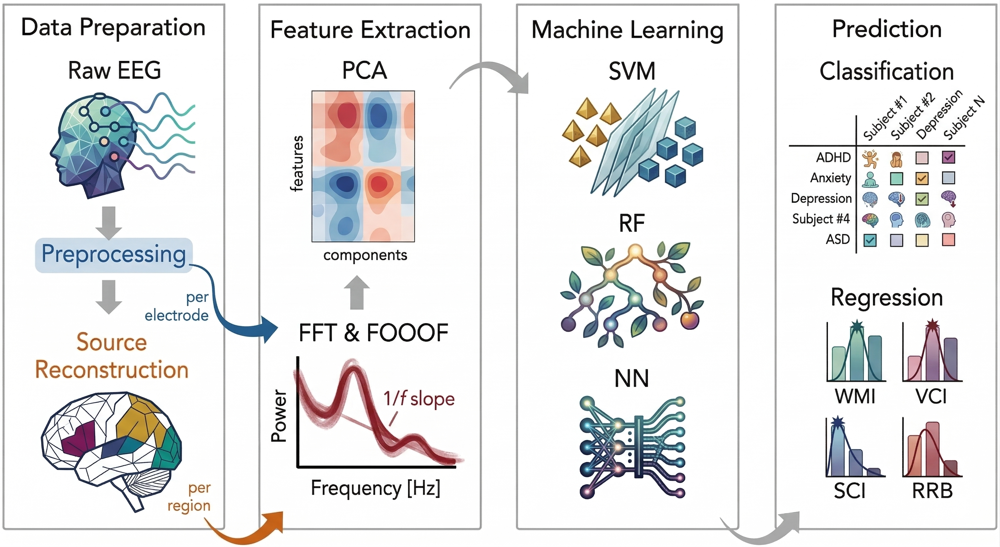
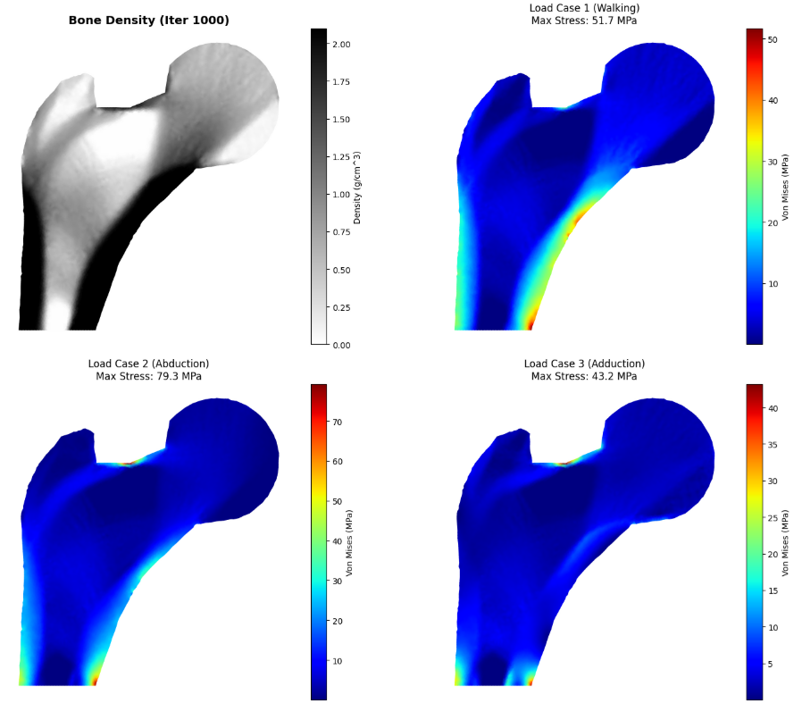
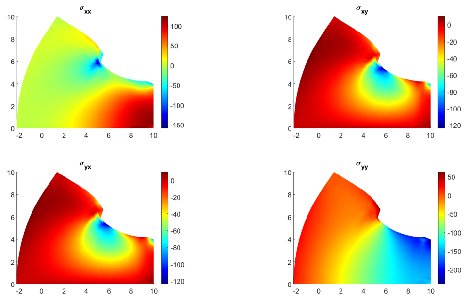
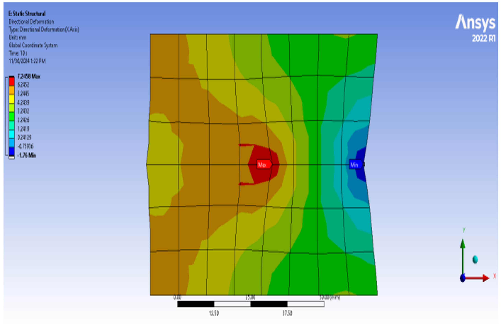

RESEARCH
As a dedicated scientific researcher, my general interest lies in the broad areas of AI & Data Science for Health, Computational Neuroscience, Numerical Analysis in Biomedical Engineering and Biomechanics. More specifically, I am working on the following research topics: (1) Numerical methods in simulating mathematical models of soft tissues and bone remodeling algorithms; (2) Brain-Computer Interfaces (BCIs); (3) Machine learning (ML) and Deep Learning (DL) in biosignal; (4) Statistical modeling of neural codes. Some of my research projects are summarized below, and you can read the full list on the Publications page.

Feature Extraction in EEG Signals and Brain-Computer Interfaces
Brain-Computer Interfaces (BCIs) translate brain activity into computer commands, showing great promise in neurorehabilitation. We studied the labeling, feature extraction, classification, and encryption of EEG biological signals. Machine learning and deep learning techniques were applied to understand each EEG signal activity using reliable data from Physionet and laboratory. Future research will delve deeper into analyzing EEG brainwave data to support the classification of human activity dynamics and the application of BCIs in biomedical engineering.
- Mathematical models: Artificial neural networks (ANN), decision trees, random forest regression, support-vector machines, regression analysis, bayesian networks,...
- Homomorphic encryption: Ciphertexts preserve algebraic structure so that operations can be executed without revealing the underlying plaintexts, using Paillier crytosystem allows two types of computation: addition of two ciphertexts & multiplication of a ciphertext by a plaintext number.

Bone Remodelling Algorithms using Numerical Meshless Method
Bone remodeling is a complex biological process that can be modeled using advanced numerical methods. In this project, we investigate the development of high-fidelity biomechanical simulations using the meshless method instead of finite element method (FEM) approach. It allows for more accurate predictions of bone density changes under various loading conditions, which have important use cases for orthopedic implant design and biomechanics.
- Radial Point Interpolation Method (RPIM): The numerical approximation employs a combination of radial basis functions (RBFs) and conventional polynomial basis functions (PBFs).
- Moving Kriging Interpolation Method (MKIM): The local approximation is defined as the sum of a deterministic polynomial part and a systematic deviation represented by a correlation function.
- Tchebychev-Radial Point Interpolation Method (TRPIM): The radial basis functions (RBFs) are combined with the Tchebychev polynomial basis functions (TPBFs) instead of conventional polynomial functions to interpolate for the physical field in the problem domain.


Hyperelastics Mathematical Model Predict Nonlinear Behavior of Human Skin
Human skin exhibits complex mechanical behavior characterized by anisotropy, viscoelasticity, and nonlinearity. These properties are influenced by a variety of factors, including internal structural composition, aging, sustained mechanical loading, and environmental conditions. To accurately capture this nonlinear response, hyperelastic models, formulated through strain energy density functions and displacement fields are commonly employed. Our project investigates the mechanical properties and behavior of hyperelastics mathematical models to verify their practical applicability as a substitute for human skin in medical robotics or artificial human skin.
- Mooney-Rivlin: Using a strain energy density function, which is a linear combination of two algebraic invariants of the left Cauchy-Green deformation tensor.
- Ogden: Considering as compressible and incompressible materials, and the volume part of the Ogden model is neglected for an incompressible material.
- Neo-Hookean: Strain energy function is defined for the large deformation of the material, and it depends on the right Cauchy-Green deformation tensor as well as Ogden strain energy function.
- Gasser-Ogden-Holzapfel: Utilized to model the fibers of skin with two ideal directions.
The best thing to do is always to follow your greatest desire
- Lucifer Morningstar (Lucifer) -